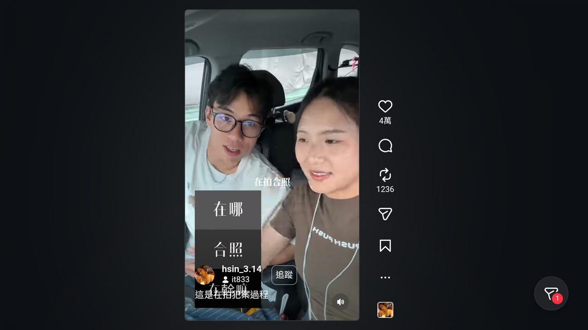
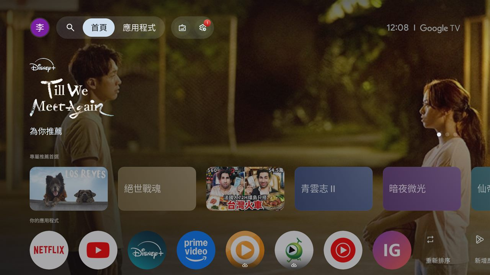
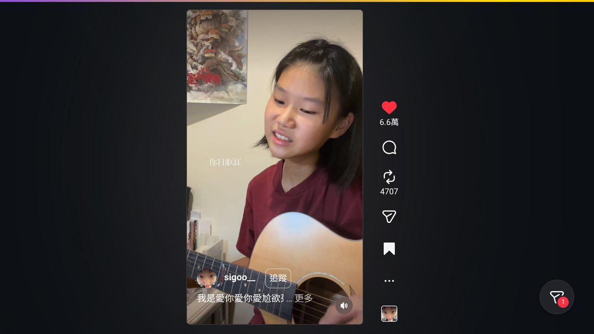
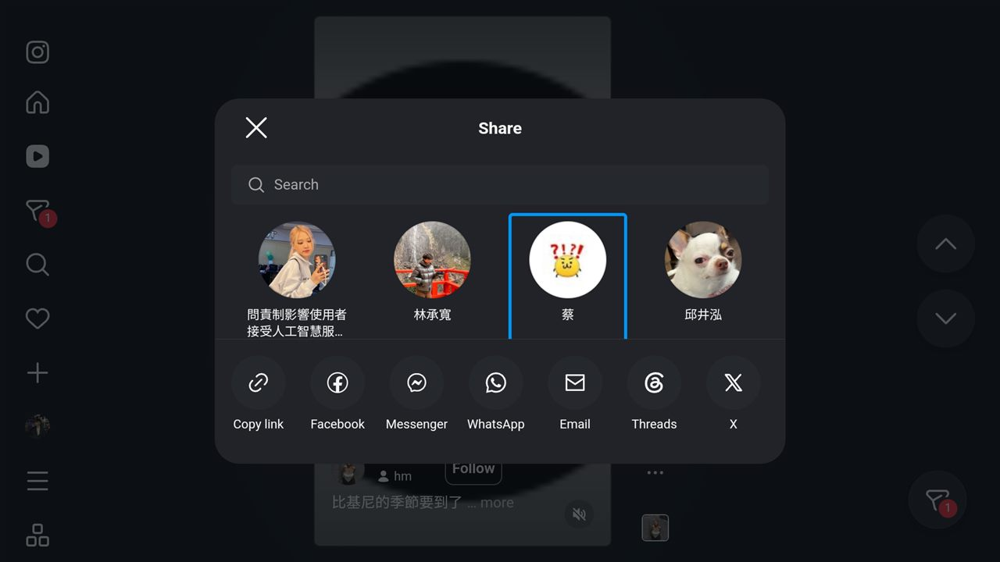
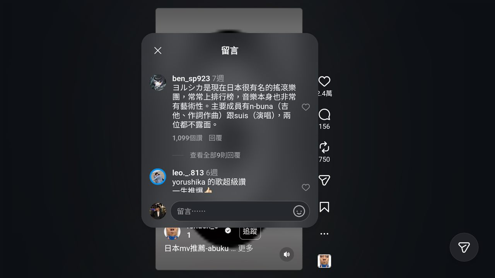

一個約 30 KB 的 Android TV App，如何把你的遙控器變成 Reels 控制器——不用私有 API、不做爬蟲，只靠一個 WebView 和大量的按鍵事件處理。

我很常看 Instagram Reels。我不喜歡的是駝著背盯著手機看。我客廳明明有一台好好的電視——一台 Chromecast with Google TV——所以自然就想:為什麼我不能靠在沙發上，用遙控器滑 Reels？
其實 Instagram 現在有官方的電視版 App 了——com.instagram.airwave，2026 年 2 月上架——但只在美國開放。在台灣它根本不會出現在 Play 商店，也沒有簡單的管道能裝。而 Google TV 又沒有一個能用的瀏覽器。卡在美國以外的地區，我乾脆自己做了一個，結果這變成一個很有趣的小練習:如何讓一個網頁體驗，感覺像一個真正的「靠著看」的原生 App。
整個東西就是一個 Activity 加上一個很大的注入式 JavaScript 函式，大約 30 KB。以下說明它怎麼運作，還有更有意思的——那些讓它「真正好用」的 bug。
有兩種做法:
WebView 載入 instagram.com/reels，讓 Instagram 自己的網頁去抓資料、渲染一切，我只負責把電視遙控器轉換成對應的網頁操作。我選了第二種。從 Instagram 伺服器的角度看，這個 App 就是一個完全普通的 Chrome 連線——因為它本來就是。沒有私有 API、沒有爬蟲。原生層唯一的工作，是讓那個網頁「表現得像一個電視 App」:全螢幕、啟動圖示，以及一個會做對事情的方向鍵。
個人／學習用途專案，與 Instagram 或 Meta 無關，亦未獲其背書。「Instagram」為 Meta Platforms, Inc. 之商標。
這個 App 會註冊成一個正式的 Google TV App——它就出現在主畫面，跟 Netflix、YouTube 並排:

進去之後，遙控器就如你預期地包辦一切:
| 按鍵 | 功能 |
|---|---|
| 上／下 | 上一部／下一部 |
| OK 單擊 | 播放／暫停 |
| OK 雙擊 | 讚／取消讚 |
| OK 長按 | 分享給好友 |
| 左 | 收藏／取消收藏 |
| 右 | 開啟留言 |
| 返回 | 關閉面板 → 上一頁 → 離開 |
「雙擊按讚」感覺很對——那正是大家在手機上點兩下螢幕早就養成的肌肉記憶:

最天真的版本——載入網頁、把方向鍵丟給 WebView 內建的空間導航——一碰到互動元素就崩了。Instagram 的留言面板、分享面板、兩步驟驗證選單都是彈出式浮層，而 WebView 的空間導航會很開心地把焦點跳出浮層、跑到後面的頁面。Instagram 偵測到焦點離開，就立刻關掉浮層。每個彈窗都「閃一下就消失」。
修法有兩部分:
MutationObserver 監看網頁，一旦有夠大的 [role=dialog] 出現或消失，就透過一個小小的 JavaScript 橋接通知原生層。於是你就能用遙控器從分享面板選好友、或捲動留言了:


1.「選單一開就秒關」。 在登入畫面，按 OK 去點 Instagram 的「嘗試其他方式」按鈕，選單會閃一下就不見。這次的兇手不是焦點——而是 WebView 對 Instagram 那種用 <div> 做的按鈕，把單次的 DPAD_CENTER 合成了兩次點擊:第一次打開選單、第二次把它關掉。修法:在登入頁攔截 OK，改由原生層精準地點一次 .click()，並吞掉那組合成的配對事件。
2. 影片預設靜音，而電視沒有觸控可以解除。 Instagram 自動靜音播放。手機上你點喇叭；電視上你辦不到。直接設 video.muted = false 沒用——Instagram 自己的狀態管理會一直把它重新靜音。可靠的修法是去點 Instagram 自己的解除靜音按鈕，用一個短間隔重試直到解除為止，然後停手。這會翻轉 Instagram 真正的狀態，所以整個階段都保持有聲。
3. 輸入延遲。 加了 observer 之後，遙控器開始變鈍。Instagram 的 Reels DOM 一直在變動，而我的 observer 在每一次變動時都重新掃描整個文件。把它節流成 200 毫秒的區間、只在狀態改變時回報、並把昂貴的一次性掃描限制在少數幾次之內，反應速度就回來了。
4. Reels 在真正的電視上載不出來——只剩一個空的播放鍵。 在模擬器上一切正常，但在真正的 Chromecast with Google TV 上，Reels 會卡住、完全沒有畫面。記錄直指硬體:mali_gralloc: Failed to allocate from codec_mm … Out of memory。這些低階 Amlogic 機器的影片解碼器專用記憶體很小，而 Instagram 的桌面版動態會同時掛著好幾部 <video> 一起解碼——足以把它塞爆。修法:用一個短間隔，暫停畫面中央那部以外的所有影片，讓同一時間只有一個硬體解碼器在運作。卡頓消失了，就算一直往下滑，Reels 也順暢播放。
./gradlew assembleDebug
# → app/build/outputs/apk/debug/app-debug.apk
adb connect <電視IP>:<埠號>
adb install -r app-debug.apk我一再重新學到的一課:你不一定要重造那個東西——有時候你只需要重新包裝你跟它對話的方式。 一個 WebView 加上幾百行按鍵事件處理，就給了我一個「靠著看」的 Reels 體驗，而且它能撐過 Instagram 的改版——因為它驅動的是 Instagram 自己的 UI，而不是一個脆弱的私有 API。
它不會上架 Play 商店，也不打算變成什麼產品。它就是一個遙控器、一台電視，和一個週六下午。但現在我可以窩在沙發上放空看 Reels——老實說，這就是重點。